Strasbourg à portée de tram
La ville redessinée par le temps qu'il faut pour y aller en tram. Choisissez un départ : la carte se colore selon le temps de trajet vers chaque point de la Métropole.
- 1. Départ Cherchez une adresse ou glissez le point vert.
- 2. Arrivée Cliquez n'importe où : durée et itinéraire détaillé.
- 3. Lecture Vert = proche, rouge = loin. Lignes noires : 15 et 30 min.
Strasbourg en chiffres
| Ligne | Stations | Un passage toutes les |
|---|---|---|
| A Tram | 27 | ~7,4 min |
| B Tram | 27 | ~6,9 min |
| C Tram | 18 | ~6,9 min |
| D Tram | 24 | ~7,6 min |
| E Tram | 26 | ~7,4 min |
| F Tram | 20 | ~7,5 min |
Questions fréquentes
Combien de temps faut-il pour traverser Strasbourg en tram ?
Depuis le centre (Place Kléber), 30 % des stations de tram sont à moins de 15 minutes et 94 % à moins de 30 minutes, marche et attente comprises. La plus éloignée, Graffenstaden, est à environ 36 minutes.
Quelle est la fréquence des lignes de tram à Strasbourg ?
En journée de semaine, l'intervalle moyen entre deux passages est de tram A : 7,4 min, tram B : 6,9 min, tram C : 6,9 min, tram D : 7,6 min, tram E : 7,4 min, tram F : 7,5 min. La ligne la plus fréquente est la B, avec un passage toutes les 6,9 minutes environ.
D'où viennent les horaires utilisés ?
Des horaires théoriques publiés par le réseau CTS (format GTFS, Licence Ouverte 2.0), téléchargés le 4 octobre 2026 et valables jusqu'au 31 mars 2027. Les temps correspondent au mardi 3 novembre 2026, entre 7 h et 20 h.
Les bus sont-ils pris en compte à Strasbourg ?
Oui, en option : cochez « Bus » sous la carte. Par défaut, seuls les tram sont affichés. L'attente aux arrêts de bus peu fréquentés est plafonnée à 15 minutes.
Comment les temps de trajet sont-ils calculés ?
Pour chaque trajet : marche jusqu'à l'arrêt à 4,5 km/h, attente égale à la moitié de l'intervalle entre deux passages, durée prévue entre les arrêts, correspondances avec 1,5 minute de marche. Pas de temps réel ni de perturbations : c'est la ville « sur le papier ».
Les autres villes
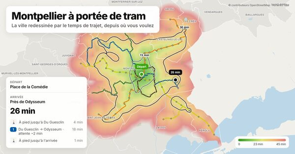
Montpellier à portée de tram
88 % des stations de tram à moins de 30 min du centre (Place de la Comédie) · réseau TaM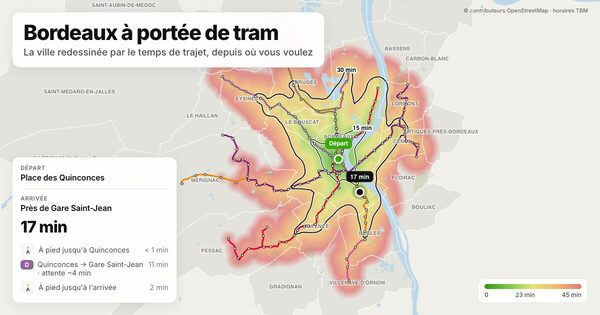
Bordeaux à portée de tram
71 % des stations de tram à moins de 30 min du centre (Place des Quinconces) · réseau TBM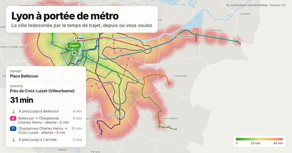
Lyon à portée de métro
69 % des stations de métro et de tram à moins de 30 min du centre (Place Bellecour) · réseau TCL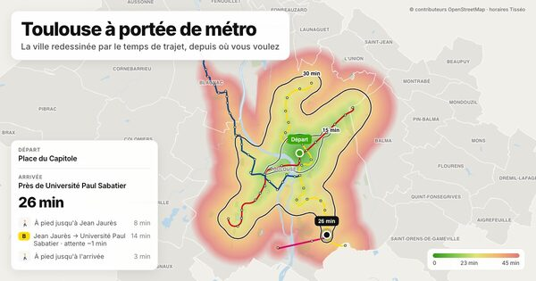
Toulouse à portée de métro
77 % des stations de métro et de tram à moins de 30 min du centre (Place du Capitole) · réseau Tisséo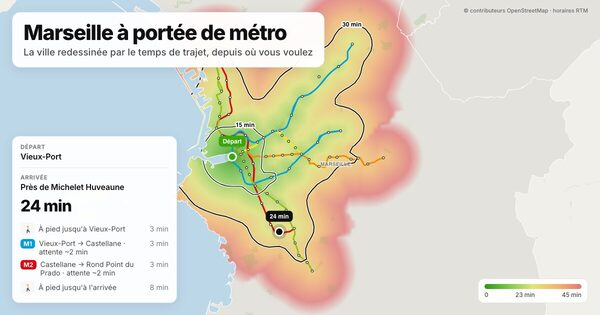
Marseille à portée de métro
98 % des stations de métro et de tram à moins de 30 min du centre (Vieux-Port) · réseau RTM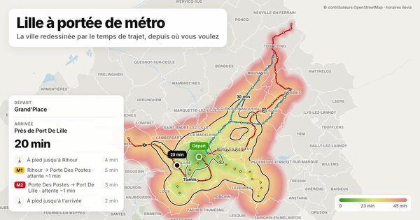
Lille à portée de métro
73 % des stations de métro et de tram à moins de 30 min du centre (Grand'Place) · réseau Ilévia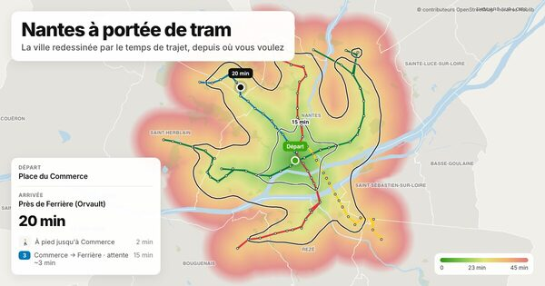
Nantes à portée de tram
96 % des stations de tram et de Busway à moins de 30 min du centre (Place du Commerce) · réseau Naolib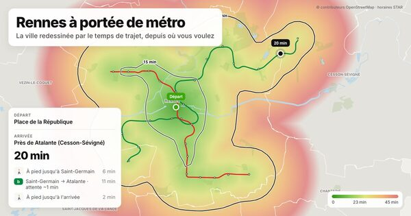
Rennes à portée de métro
100 % des stations de métro à moins de 30 min du centre (Place de la République) · réseau STAR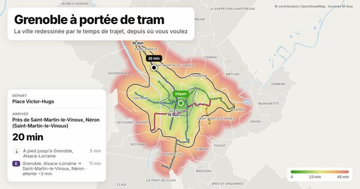
Grenoble à portée de tram
90 % des stations de tram à moins de 30 min du centre (Place Victor-Hugo) · réseau M réso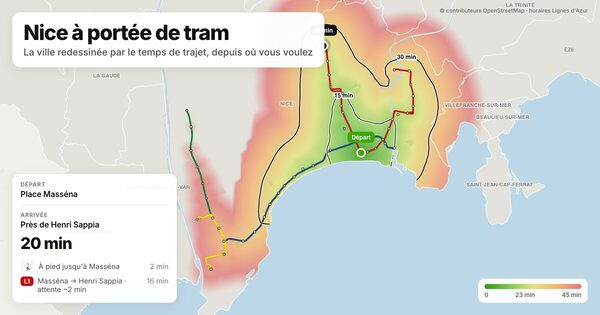
Nice à portée de tram
72 % des stations de tram à moins de 30 min du centre (Place Masséna) · réseau Lignes d'Azur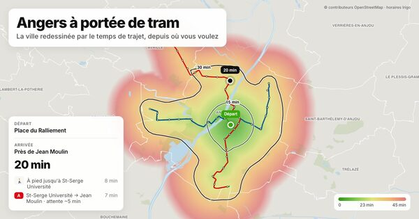
Angers à portée de tram
90 % des stations de tram à moins de 30 min du centre (Place du Ralliement) · réseau Irigo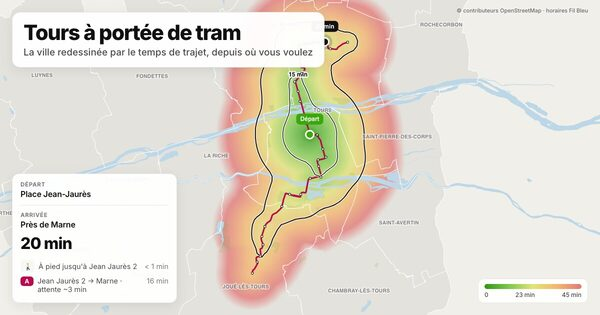
Tours à portée de tram
97 % des stations de tram à moins de 30 min du centre (Place Jean-Jaurès) · réseau Fil Bleu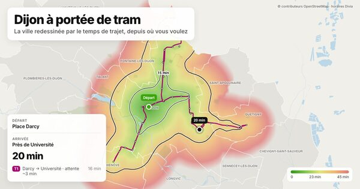
Dijon à portée de tram
100 % des stations de tram à moins de 30 min du centre (Place Darcy) · réseau Divia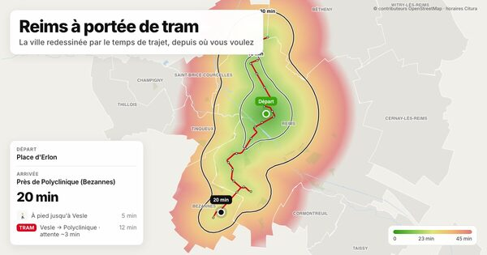
Reims à portée de tram
100 % des stations de tram à moins de 30 min du centre (Place d'Erlon) · réseau Citura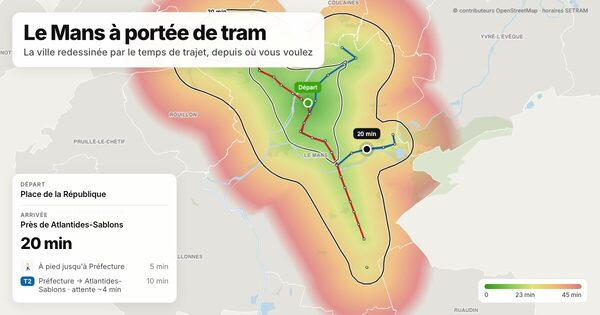
Le Mans à portée de tram
100 % des stations de tram à moins de 30 min du centre (Place de la République) · réseau SETRAM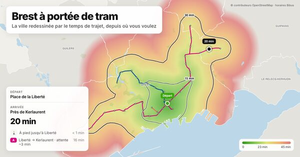
Brest à portée de tram
100 % des stations de tram à moins de 30 min du centre (Place de la Liberté) · réseau Bibus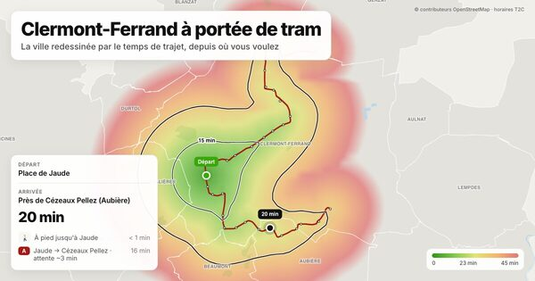
Clermont-Ferrand à portée de tram
94 % des stations de tram à moins de 30 min du centre (Place de Jaude) · réseau T2C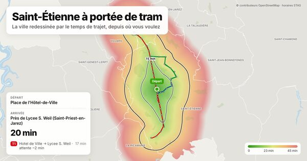
Saint-Étienne à portée de tram
100 % des stations de tram à moins de 30 min du centre (Place de l'Hôtel-de-Ville) · réseau STAS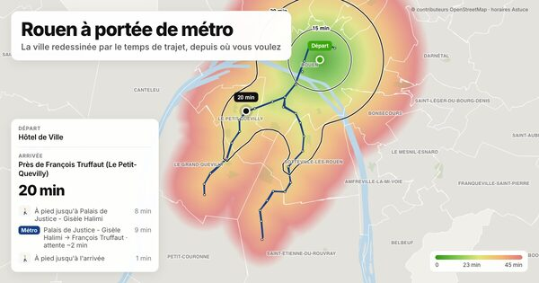